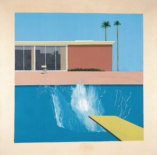

A Bigger Splash
David Hockney · 1967 · Acrylic paint on canvas · 242.5 × 243.9 cm · Tate, London
In copyright. Look and learn: shown for study, not for download.
David Hockney painted this between April and June 1967, while teaching at the University of California at Berkeley. The splash came from a photograph in a book about building swimming pools. He rolled the flat colour on with rollers, painted the splash with small brushes, and spent about two weeks on a splash that lasts two seconds. The canvas was stapled to his studio wall, and the border and the strip along the pool edge were left unpainted. It is the largest of three splash paintings.